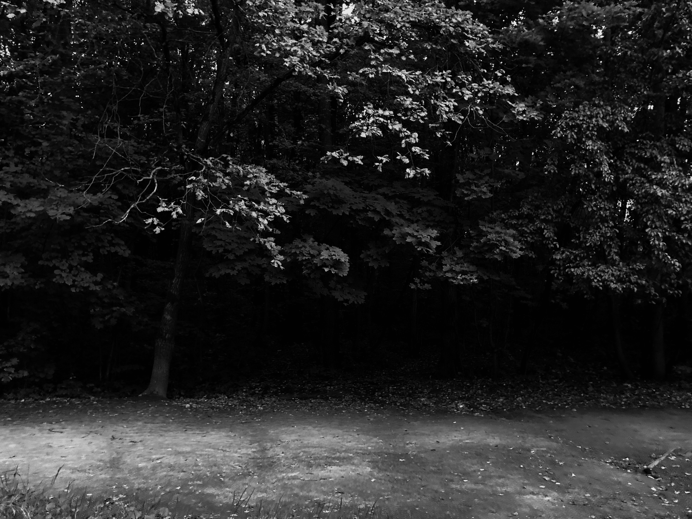

Un bosque emburjado fue explorado con un dron
Nadie podia presagiar que el bosque era realmente un set de cine...
About Me
Creador del cavernario del siglo 32, un aventurero sin prisa por ver el futuro
Creador del cavernario del siglo 32, un aventurero sin prisa por ver el futuro